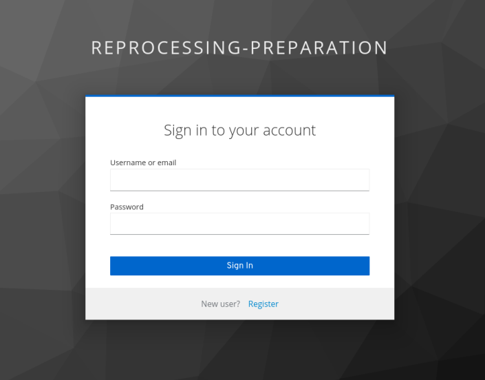
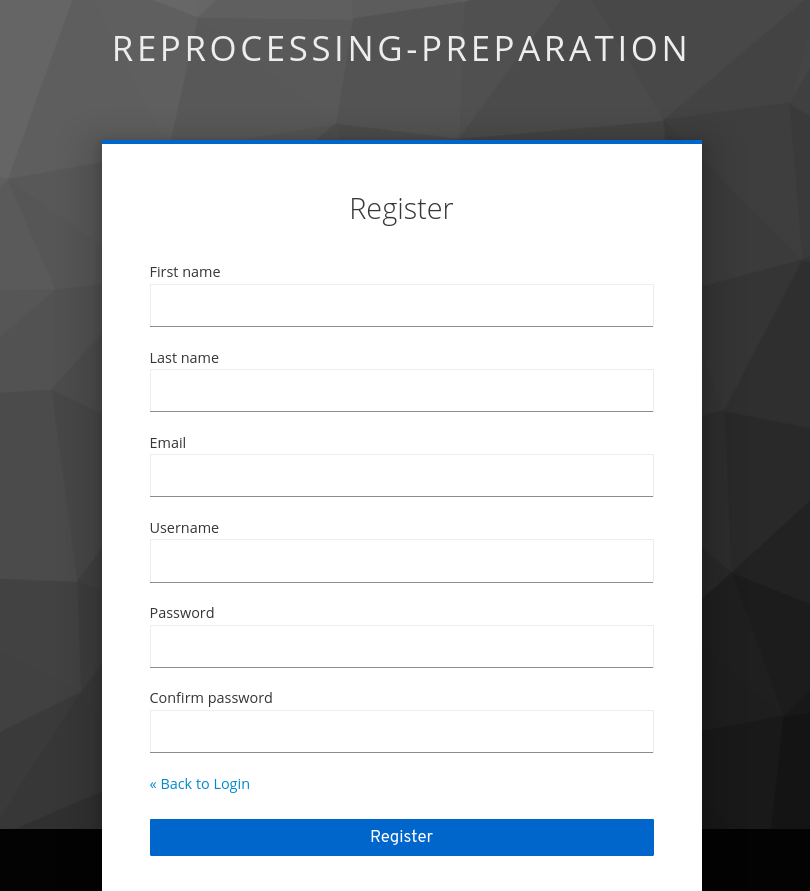
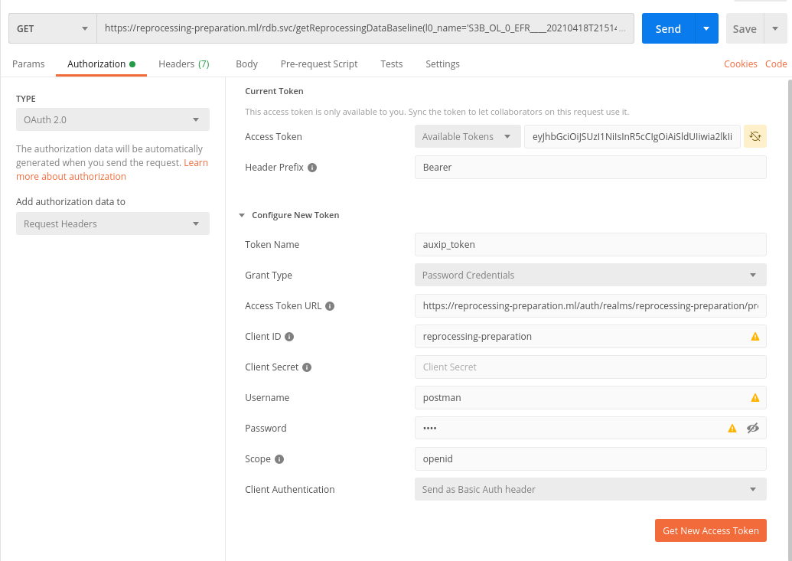

| Description | Version | Date |
|---|---|---|
| Issued | 1.0 | 17/06/2021 |
Change Log:
Table of contents
3.3.2 Via Curl and Python for developers 10
3.4 Requesting for reprocessing data baseline 10
4.1 Appendix A – Http Status and Error Messages 13
This document is the Reprocessing Data Baseline API user manual, it contains the necessary instructions for getting started with this service, the main functionality exposed by this API is getReprocessingDataBaseline function allowing clients to retrieve the applicable up-to-date auxiliary data products from the reprocessing preparation package database allowing users to carry out reprocessing campaigns.
OData Documentation http://www.odata.org/documentation
OData Protocol http://docs.oasis-open.org/odata/odata/v4.01/odata-v4.01-part1-protocol.html
REPROCESSING REFERENCE PACKAGE PREPARATION
| Term | Definition |
|---|---|
| API | A set of functions and procedures allowing the creation of applications that access the features or data of an operating system, application, or other service. |
| AUX_File | Auxiliary file used in a satellite processing chain |
| Acronym | Signification |
|---|---|
| AD | Applicable Document |
| UUID | Universally Unique Identifier – Allows to identify an instance |
| JSON | JavaScript Object Notation, commonly used format in web services |
| URI | Uniform Resource Identifier |
The Reprocessing Data Baseline main functionality is to identify for each Level-0 product name and Level-1/2 product type to be reprocessed, the applicable up to date list of auxiliary data files to be used for reprocessing campaigns.
This document aims to teach new users how to use the Reprocessing Data Baseline API; it contains the following main instructions:
The access point of the Reprocessing Data Baseline API.
User registration.
Access token generation.
Data Requesting via the main functionality getReprocessingDataBaseline()
As a part of the Reprocessing Preparation Package, Reprocessing Data Baseline API can be accessed via the following URL:
https://reprocessing-auxiliary.copernicus.eu/rdb.svc
New users of Reprocessing Data Baseline API should be registered first in order to be able to use the API and request for the accessToken.
|  |  |
Figure 1 : Sign in & registration Interface
To get the Reprocessing Data Baseline API token for a client, an HTTP POST request should be sent to the following Token resource:
In the post body, username and password are specified in JSON format, and the response body contains a token key with an actual API Token as the value. The token should be used in an HTTP Authorization header while communicating with the Reprocessing Data Baseline service.
It is necessary to get a token using a tool (a browser or any other application that can send http requests). Depending on the client that is used, there are different ways to send HTTP headers.
This chapter covers the following examples:
Sending requests via Postman
Curl
Python

Figure 2 : Getting New Access Token via Postman
To be able to send requests via Postman, one should configure the authorization settings first, as showing in the above steps:
Steps 2 and 3 : choose authorization via OAuth 2.0
Steps 4 to 7 :
Access Token URL : set the the resource where to post for the accessToken,
Client ID : should be set to “reprocessing-preparation”
Username and Password : Client credentials from the registration.
Scope : openid
Step 8 : Get New Access Token
Curl
RAWTKN=$(curl -s -X POST \
-H "Content-Type: application/x-www-form-urlencoded" \
-d "username="$USER \
-d "password="$PASSWORD \
-d 'grant_type=password' \
-d "client_id=reprocessing-preparation" \
https://reprocessing-auxiliary.copernicus.eu/auth/realms/reprocessing-preparation/protocol/openid-connect/token \
|jq . )
TOKEN=$(echo $RAWTKN | jq -r '.access_token')
echo "Token to be used to access to our service : ${TOKEN} "
Python
import requests
def get_token_info(user,password):
headers = {'Content-Type': 'application/x-www-form-urlencoded'}
data={"username":user, "password":password,"client_id":" reprocessing-preparation","grant_type":"password"}
token_endpoint="https://reprocessing-auxiliary.copernicus.eu/auth/realms/reprocessing-preparation/protocol/openid-connect/token"
token_endpoint="https://reprocessing-auxiliary.copernicus.eu/auth/realms/reprocessing-preparation/protocol/openid-connect/token"
response = requests.post(token_endpoint,data=data,headers=headers)
return response.json()
The Reprocessing Data baseline API is an ODATA Restfull API, which gives access to the data baseline via only one unbounded function called getReprocessingDataBaseline(), this function is overloaded and can be called in the following two ways :
With a comma separated list of level 0 products names + mission + unit + product_type :
With sensing time interval (start and stop) + mission + unit + product_type :
| Parameter | Description | Example |
|---|---|---|
| l0_names | Comma separated list of level 0 products names. | 'S3A_OL_0_EFR____20201108T205651_20201108T205851_20201108T220426_0119_065_014______LN1_O_NR_002.SEN3' |
| mission | Mission to be considered while retrieving auxiliary data files | Can be one of the following : 'S2MSI', 'S1SAR', 'S3OLCI', 'S3MWR', 'S3SRAL', 'S3SYN', 'S3SLSTR' |
| unit | Platform Serial Identifier | 'A', 'B' |
| product_type | L1/L2 type of the product to be reprocessed. This type is mission dependent. |
Depending of the mission S1SAR : { 'L1SLC', 'L1GRD', 'L2OCN' } S2MSI : { 'L1A', 'L1B', 'L1C', 'L2A' } S3MWR : { 'L1CAL', 'L1MWR' } S3OLCI : {'L1EFR', 'L1ERR' , 'L2LFR', 'L2LRR' } S3SLSTR : { 'L1RBT', 'L2LST', 'L2FRP' } S3SRAL : { 'L1CAL', 'L1SRA', 'L2LAN' } S3SYN : { 'L1MISR', 'L2' } |
| start | Sensing start date time | 2019-10-06T18:00:00Z |
| stop | Sensing start date time | 2020-11-06T19:00:00Z |
Table 1 : getReprocessingDataBaseline parameters
The Query of applicable up to date reprocessing auxiliary data function is achieved through standard Odata API Function, the output of this function is list of auxiliary data files with AUXIP access cloud links.
Here after a calling list of the function getReprocessingDataBaseline showing the three use cases:
With only one level 0 product name :
With a list of level 0 product names :
With sensing date time interval :
Example of the request response:
The GET response of applicable products list is an HTTP response to the GET reprocessing data baseline request. As recommended by the OData specification, the Reprocessing Data Baseline OData service supports responses in JSON.
The following overall HTTP status codes may be returned with the response:
200 OK: if the request is accepted and a response can be returned
400 Bad Request
401 Unauthorized: if the requesting client is unauthorised
404 Not Found
500 Internal Server Error
<?xml version="1.0" encoding="UTF-8"?>
<edmx:Edmx Version="4.0" xmlns:edmx="http://docs.oasis-open.org/odata/ns/edmx">
<edmx:DataServices>
<Schema xmlns="http://docs.oasis-open.org/odata/ns/edm" Namespace="OData.CSC">
<EntityType Name="DataBaseline">
<Property Name="Level0" Type="Edm.String"></Property>
<Property Name="AuxDataFiles" Type="Collection(OData.CSC.Product)"></Property>
</EntityType>
<ComplexType Name="Product">
<Property Name="Name" Type="Edm.String" Nullable="false"></Property>
<Property Name="AuxipLink" Type="Edm.String" Nullable="false"></Property>
</ComplexType>
<Function Name="getReprocessingDataBaseline">
<Parameter Name="l0_names" Type="Edm.String" Nullable="false"></Parameter>
<Parameter Name="mission" Type="Edm.String" Nullable="false"></Parameter>
<Parameter Name="unit" Type="Edm.String" Nullable="false"></Parameter>
<Parameter Name="product_type" Type="Edm.String" Nullable="false"></Parameter>
<ReturnType Type="Collection(OData.CSC.DataBaseline)"/>
</Function>
<Function Name="getReprocessingDataBaseline">
<Parameter Name="start" Type="Edm.DateTimeOffset" Nullable="false"></Parameter>
<Parameter Name="stop" Type="Edm.DateTimeOffset" Nullable="false"></Parameter>
<Parameter Name="mission" Type="Edm.String" Nullable="false"></Parameter>
<Parameter Name="unit" Type="Edm.String" Nullable="false"></Parameter>
<Parameter Name="product_type" Type="Edm.String" Nullable="false"></Parameter>
<ReturnType Type="Collection(OData.CSC.DataBaseline)"/>
</Function>
<EntityContainer Name="Container">
<FunctionImport Name="getReprocessingDataBaseline" Function="OData.CSC.getReprocessingDataBaseline" IncludeInServiceDocument="true"></FunctionImport>
</EntityContainer>
</Schema>
</edmx:DataServices>
</edmx:Edmx>